WEEK 3
1803 - 2403WORK PROGRESS
Artwork 1 & 2: Finishing Mintie's video 1 & Starting 2
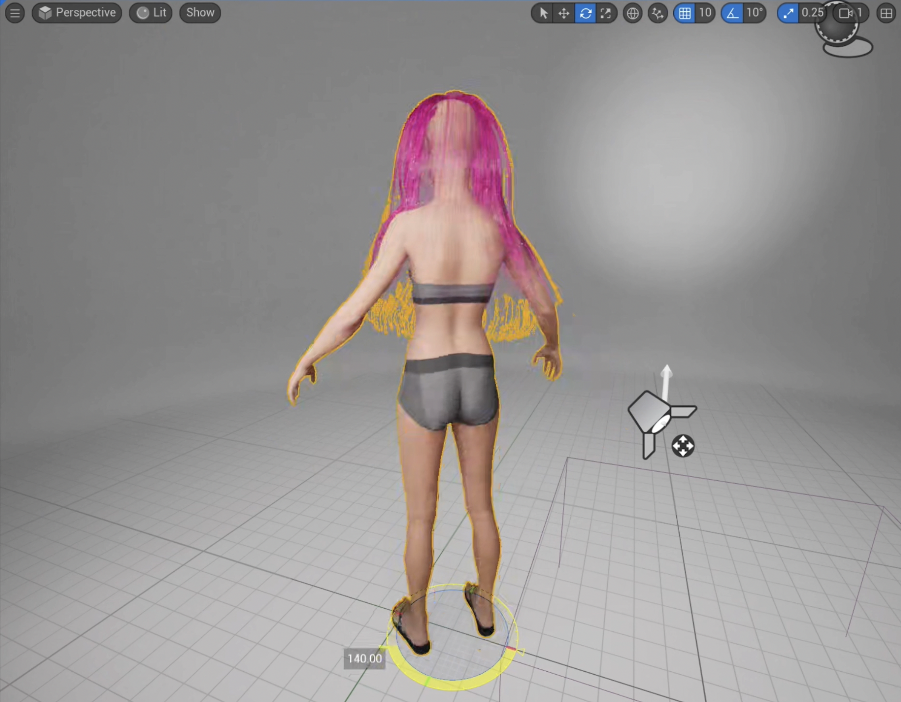Losing Hair Issue
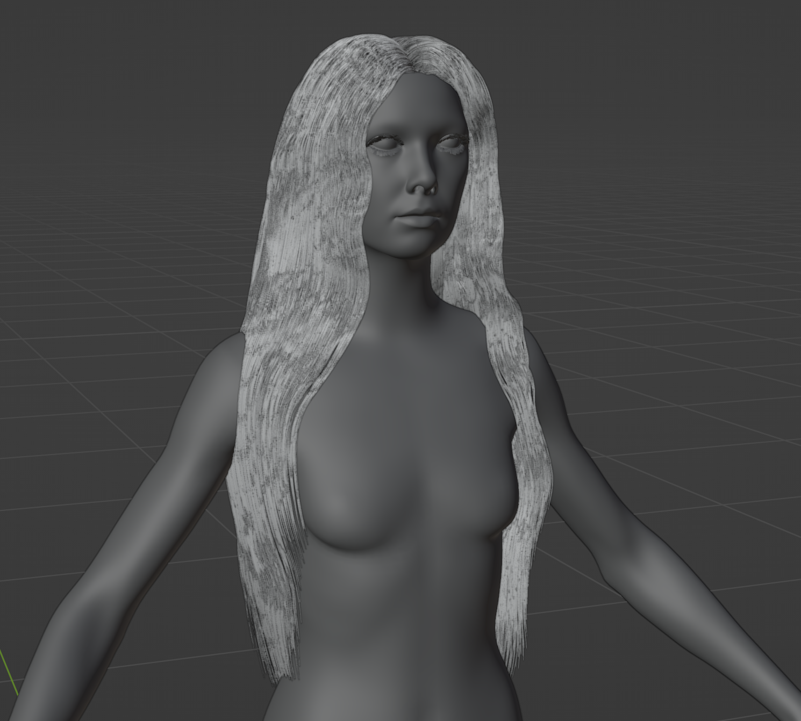
New Hair Model in Blender
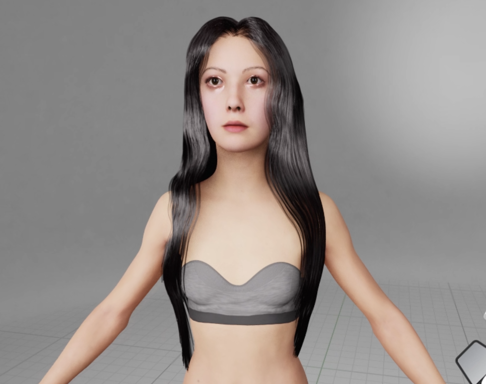
New Black Hair Combined in Unreal
The first hair I created had some issues with losing hair strands when imported into Unreal. I decided to create a new one, making sure there are enough strands to prevent it from looking like someone losing too much hair. Also, I was thinking of having pink hair, but I think I will proceed with black hair. With pink hair, it attracts more attention to the hair rather than the character or the clothing. This might be updated later on with other environments.
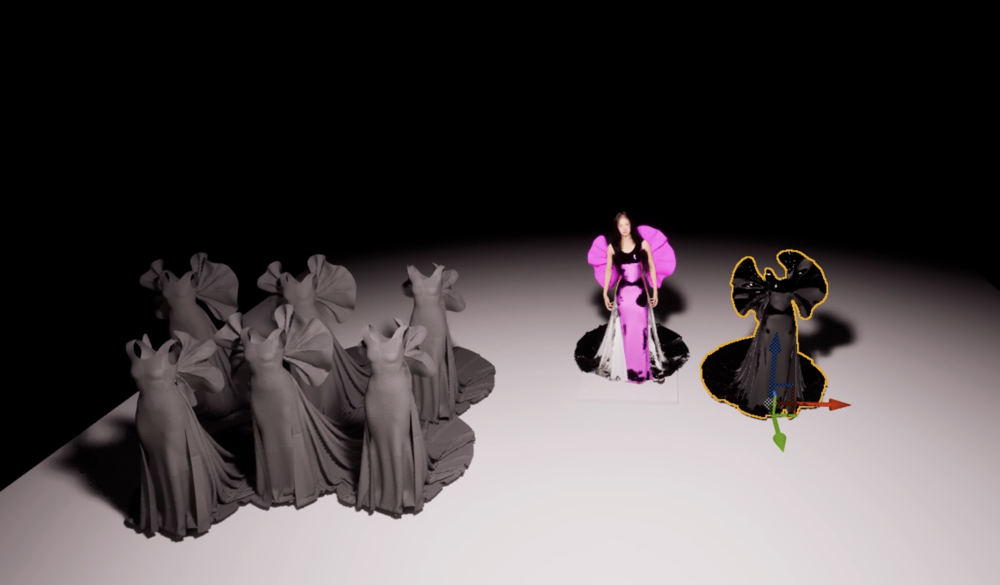
Various Attempts of Importing the Dress
With the change of hair, I also encountered some issues with properly importing clothing simulation to Unreal. I had to try many different methods to figure out how to make it work. It was either the texture not importing properly or the geometry cache was out of position. After some research, I imported and exported in Blender, and it worked. It was strange how the same FBX would not work if it’s directly from Marvelous Designer, but it worked.

Three-point lighting setup for rendering
For the renders, I've experimented with various settings and parameters, trying different rendering options. After many attempts, I now understand that lighting is the key to the quality of the render! I've been studying the actual camera settings in the real world, as unreal lighting systems mimic real-world behaviour. I learned about the industry-standard "Three-point lighting setup" used in films, photography, and other visual media. This setup includes the key light, backlight, and fill light. By setting up three cameras in front, side, and back of the actor, cinematographers can illuminate the actor in any desired way. This link was helpful in understanding the setup: https://nofilmschool.com/3-point-lighting
Rendering is one of the biggest challenges in terms of balancing quality and rendering time. To achieve cinematic quality renders, I had to implement heavy settings, and Unreal crashed frequently. With some settings, rendering took up over 10 hours, so I had to let it render overnight. Generally, it takes about 5-6 hours to render approximately 300 frames. I'm rendering a few different angles and camera settings to produce final output.
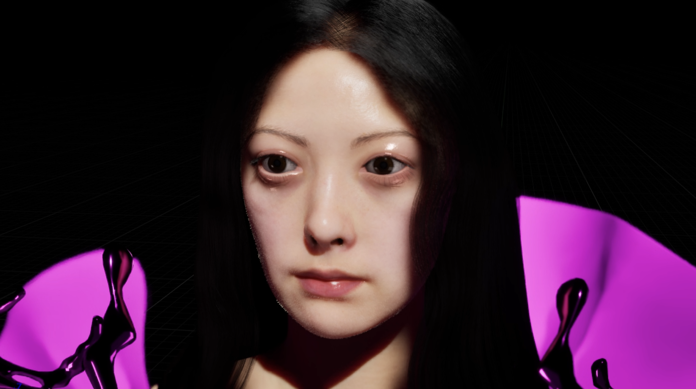 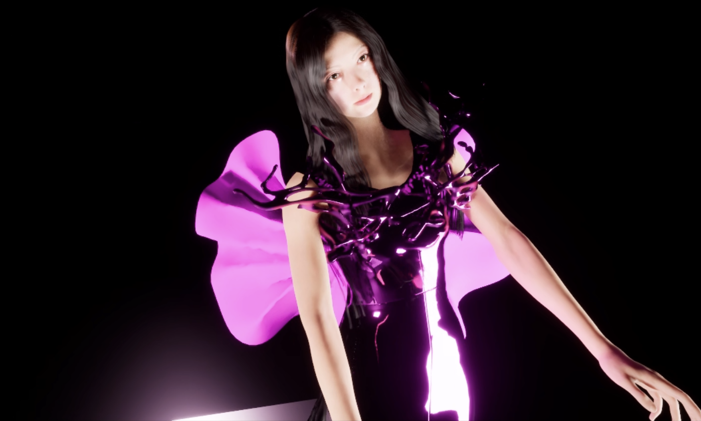 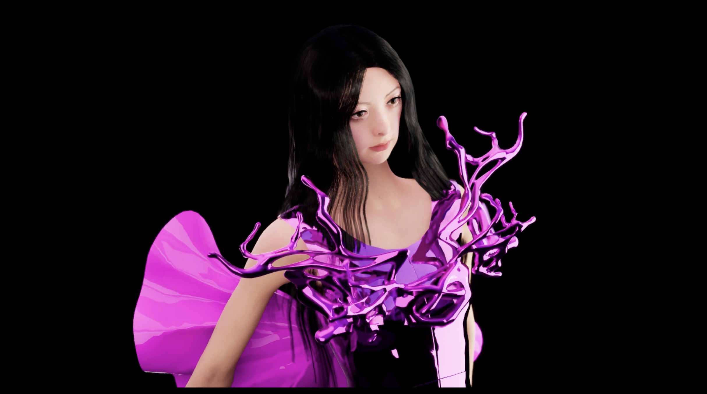 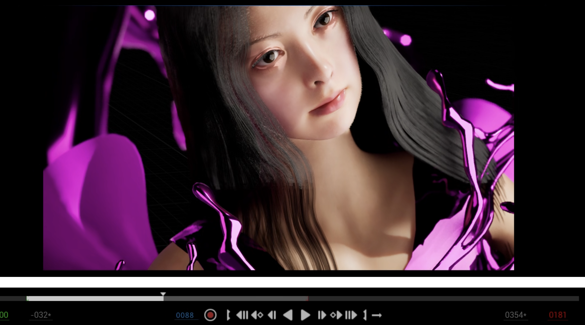 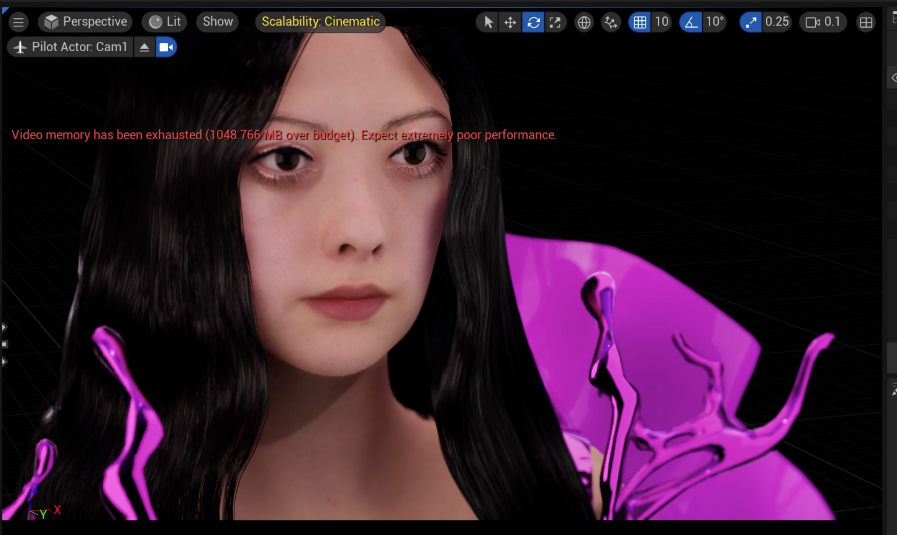
Screenshots of the renders for the first video
After having several renders for the first video/artwork, I also started working on the second video/artwork. While the first one focuses more on introducing Mintie, the second one is themed after rose petals and pink colour, capturing the beautiful side of the rose/emotions/life. The clothing and the environment are designed to embody the aesthetics of beautiful petals with the main colour being pink.
The Rose Dress is the second garment I've worked on. Instead of Marvelous Designer, I started exploring Clo3D. The two software are almost identical except for a few extra features exclusive to Clo3D. The difference stems from the primary purpose of each software: Marvelous Designer is more for 3D artists creating virtual clothes for characters, while Clo3D is primarily used by the fashion industry. Thus, it makes sense that Clo3D has a few more features tailored for creating clothes in detail.
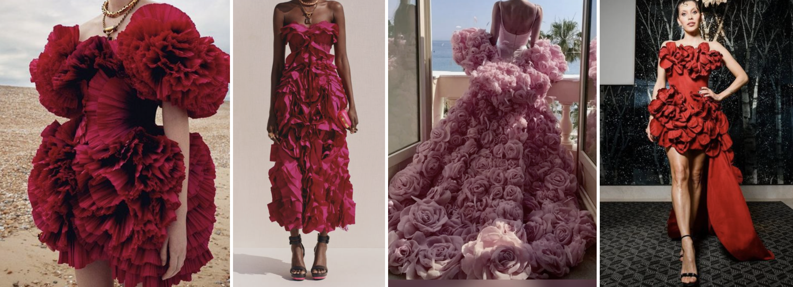 Inspirational research has been done to finalise the design of the rose dress.
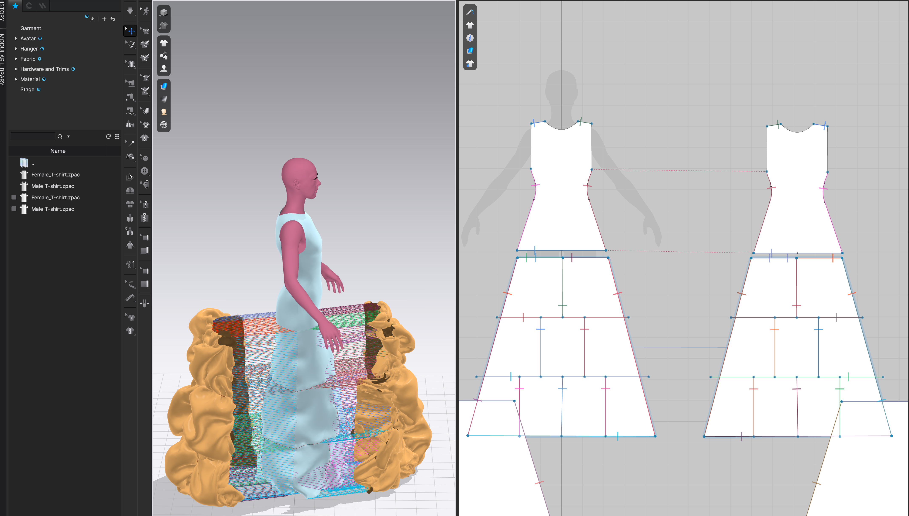 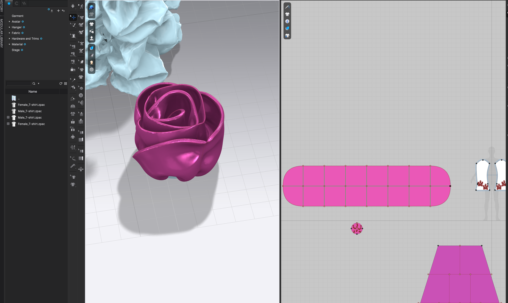 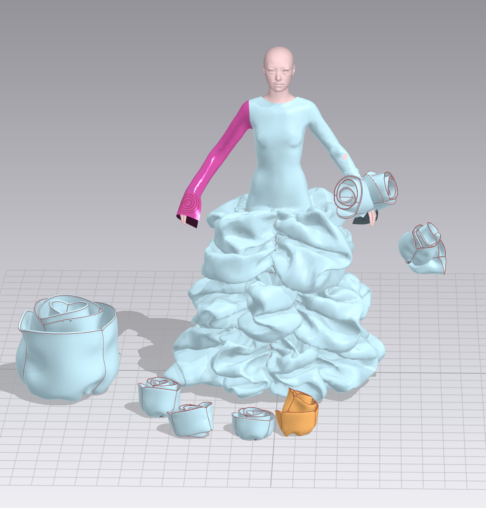 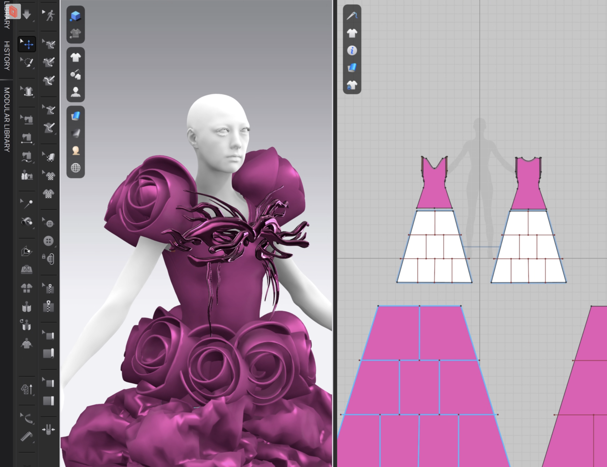
Screenshots of the rose dress production
The bottom part of the dress was designed with petal-like drapes to convey the desired aesthetics, but not too straightforwardly. Additionally, to enhance the representation of the concept, fabric roses were created in Clo3D and sewn onto the shoulders and waist of the dress. Crafting the fabric roses was a big challenge. Even after successfully sewing one rose after many attempts, duplicating it and placing it on the dress led to simulation issues. Eventually, I exported the rose as an FBX model and imported it as hardware onto the dress to effectively sew them on. However, this method had the downside of being unable to edit the pattern once imported as hardware, requiring re-exporting and importing the model for any desired changes.
 The accessory on the chest is actually the 3D model I created for the last project, "Quantum Faces." It's one of the four facial sculptures. I thought it would be nice to attach it to the dress as an accessory to add more detail and enhance the quality of the dress. Additionally, it creates a bridge between my projects and helps strengthen the artistic style.
The accessory on the chest is actually the 3D model I created for the last project, "Quantum Faces." It's one of the four facial sculptures. I thought it would be nice to attach it to the dress as an accessory to add more detail and enhance the quality of the dress. Additionally, it creates a bridge between my projects and helps strengthen the artistic style.